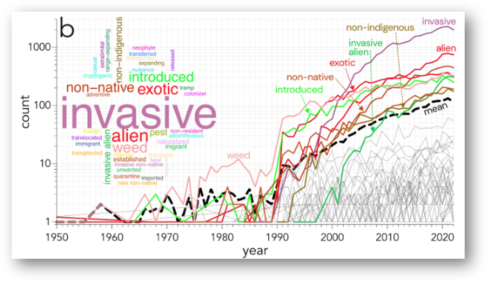
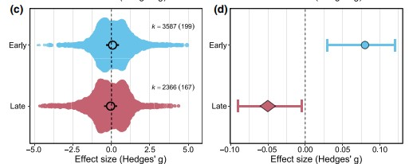
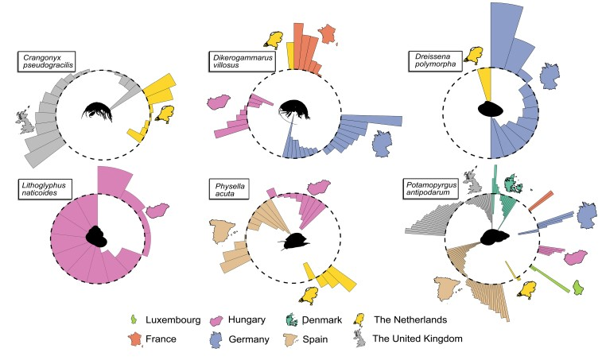
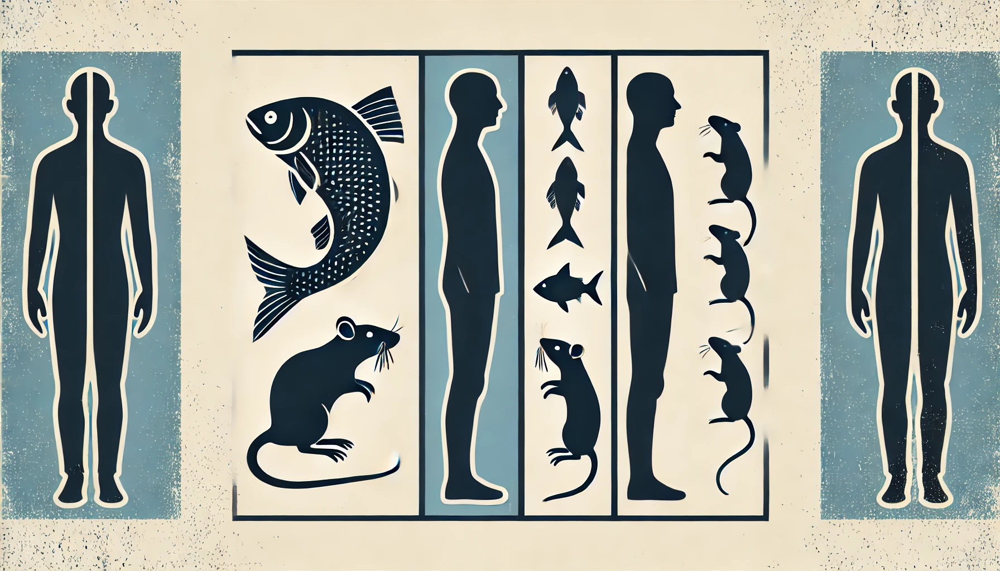

Top-5 Scientific Research

2024
Taming the Terminological Tempest in Invasion Science
A standardised framework in invasion science is needed for a clear, universally applicable, and consistent terminology to promote more effective communication across researchers, stakeholders, and policymakers.

2024
Divergent temporal responses of native macroinvertebrate communities to biological invasions
Response of native communities to biological invasions in the short and long term

2024
Biological invasions are a population‐level rather than a species‐level phenomenon
Importance of population level in invasion-science

2024
Parallels and discrepancies between non-native species introductions and human migration
Similarities and divergences in the study of species movements and human migrations
2025
Too add
Too add
Full publication list
Full publication list can be found at: https://scholar.google.com/citations?user=y3nT7tkAAAAJ&hl=es